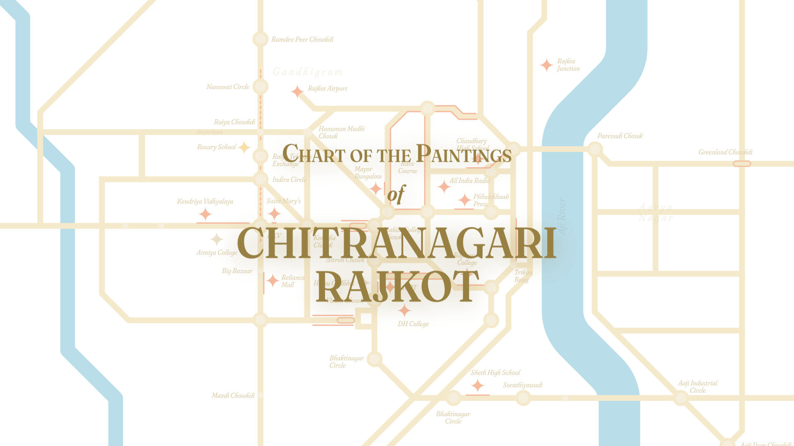

Rajkot, frequently referred to as Rangilu Rajkot, is also called as "Chitranagri" (City of Paintings). Rajkot is home to more than 50,000 wall paintings all over the city thanks to a programme kickstarted in 2015 under the motto of “Swachh Rajkot, Sundar Rajkot”. This map is a humble tribute to all the artists of the city and Meet Palan, a 27-year old entrepreneur with a mission to make Rajkot the most clean and beautiful city in the world.
Started off by collecting various wall painting spots all over the city and then placing all those points on Google Map.
For the next step, I started tracing the paths based on the points collected in the previous step.
Slowly started simplifying the paths without any grid in mind just for the exploration and finding the angles.
Added the two main rivers that pass through the city and also started adjusting the paths at 45° for better consistency.
Explored a bit on how to better show the paintings based on which side of the road they are at.
Added a little bit of information text and legend to accompany the final map.